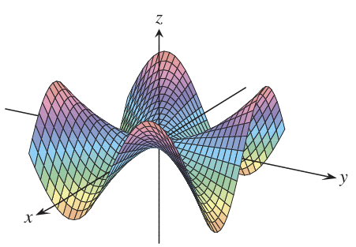
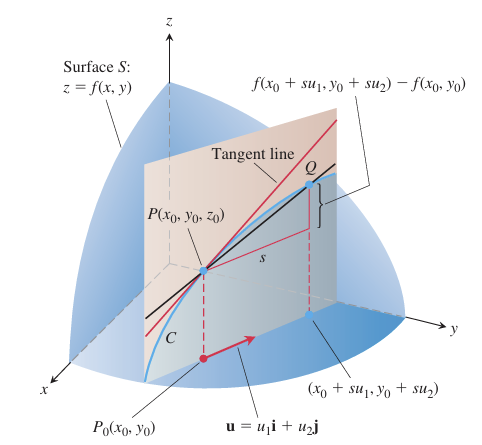
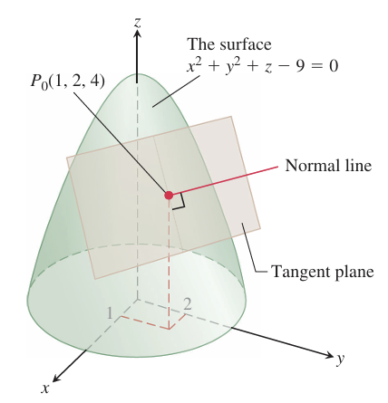

OVERVIEWThis chapter extends single-variable calculus to functions of several variables and introduces partial derivatives.
Partial Derivatives
This section introduces partial derivatives, which are found by differentiating one variable while keeping others constant.
DEFINITION We define the partial derivative of \( f \) with respect to \( x \) at the point \( (x_0, y_0) \) as the ordinary derivative of \( f(x, y_0) \) with respect to \( x \) at the point \( x = x_0 \). To distinguish partial derivatives from ordinary derivatives, we use the symbol \( \partial \) rather than the \( d \) previously used.
\[ \left( \frac{\partial f}{\partial x} \right) \Bigg|_{(x_0, y_0)} = \left( \frac{d}{dx} f(x, y_0) \right) \Bigg|_{x = x_0}. \]
EXAMPLE Find the values of \( \frac{\partial f}{\partial x} \) and \( \frac{\partial f}{\partial y} \) at the point \( (4, -5) \) if \( f(x, y) = x^2 + 3xy + y - 1 \).
Solution To find \( \frac{\partial f}{\partial x} \), we treat \( y \) as a constant and differentiate with respect to \( x \):
\[ \frac{\partial f}{\partial x} = \frac{\partial}{\partial x} (x^2 + 3xy + y - 1) = 2x + 3y. \]
The value of \( \frac{\partial f}{\partial x} \) at \( (4, -5) \) is:
\[ 2(4) + 3(-5) = -7. \]
To find \( \frac{\partial f}{\partial y} \), we treat \( x \) as a constant and differentiate with respect to \( y \):
\[ \frac{\partial f}{\partial y} = \frac{\partial}{\partial y} (x^2 + 3xy + y - 1) = 3x + 1. \]
The value of \( \frac{\partial f}{\partial y} \) at \( (4, -5) \) is:
\[ 3(4) + 1 = 13. \]
Functions of More than Two Variables
DEFINITION For functions with more than two variables, partial derivatives are found by differentiating with respect to one variable while keeping the others constant. The process is similar to that for functions of two variables.
EXAMPLE If \( x, y, \) and \( z \) are independent variables and \( f(x, y, z) = x sin (y + 3z) \), then:
\[ \frac{\partial f}{\partial z} = \frac{\partial}{\partial z} \big[x \sin (y + 3z)\big] = x \cos (y + 3z) \frac{\partial}{\partial z} (y + 3z) = 3x \cos (y + 3z). \]
Second-Order Partial Derivatives
DEFINITION When we differentiate a function \( f(x, y) \) twice, we produce its second-order derivatives. These derivatives are usually denoted by:
\[ \frac{\partial^2 f}{\partial x^2} \text{ or } f_{xx}, \quad \frac{\partial^2 f}{\partial y^2} \text{ or } f_{yy}. \]
Directional Derivatives and Gradient
Suppose that the function \( f(x, y) \) is defined throughout a region \( R \) in the \( xy \)-plane, that \( P_0(x_0, y_0) \) is a point in \( R \), and that \( u = u_1 i + u_2 j \) is a unit vector. Then the equations
\[ x = x_0 + s u_1, \quad y = y_0 + s u_2 \]
parametrize the line through \( P_0 \) parallel to \( u \). If the parameter \( s \) measures arc length from \( P_0 \) in the direction of \( u \), we find the rate of change of \( f \) at \( P_0 \) in the direction of \( u \) by calculating \( \frac{df}{ds} \) at \( P_0 \).
DEFINITION The derivative of \( f \) at \( P_0(x_0, y_0) \) in the direction of the unit vector \( u = u_1 i + u_2 j \) is the number
\[ \left( \frac{df}{ds} \right)_{u, P_0} = \lim_{s \to 0} \frac{f(x_0 + s u_1, y_0 + s u_2) - f(x_0, y_0)}{s}, \]
provided the limit exists.
The directional derivative is also denoted by
\[ D_u f(P_0) \text{ or } D_u f \Big|_{P_0} \]
which means "The derivative of \( f \) in the direction of \( u \), evaluated at \( P_0 \)."
The directional derivative measures the rate of change of a function in any direction, not just along the \( x \)- or \( y \)-axes. Geometrically, it is the slope of the tangent to a curve formed by slicing the surface in a given direction. Physically, it can represent how temperature changes at a point when moving in a specific direction.
DEFINITION The gradient vector (or gradient) of \( f(x, y) \) is the vector
\[ \nabla f = \left( \frac{\partial f}{\partial x} \right) i + \left( \frac{\partial f}{\partial y} \right) j. \]
The value of the gradient vector obtained by evaluating the partial derivatives at a point \( P_0(x_0, y_0) \) is written
\[ \nabla f \Big|_{P_0} \text{ or } \nabla f(x_0, y_0). \]
THEOREM—The Directional Derivative Is a Dot Product
If \( f(x, y) \) is differentiable in an open region containing \( P_0(x_0, y_0) \), then
\[ \left( \frac{df}{ds} \right)_{u, P_0} = \nabla f \Big|_{P_0} \cdot u, \]
the dot product of the gradient \( \nabla f \) at \( P_0 \) with the vector \( u \). In brief,
\[ D_u f = \nabla f \cdot u. \]
Properties of the Directional Derivative
\[ D_u f = \nabla f \cdot u = |\nabla f| \cos \theta \]
1. The function \( f \) increases most rapidly when \( \cos \theta = 1 \), which means that \( \theta = 0 \) and \( u \) is the direction of \( \nabla f \). That is, at each point \( P \) in its domain, \( f \) increases most rapidly in the direction of the gradient vector \( \nabla f \) at \( P \). The derivative in this direction is
\[ D_u f = |\nabla f| \cos (0) = |\nabla f|. \]
2. Similarly, \( f \) decreases most rapidly in the direction of \( -\nabla f \). The derivative in this direction is
\[ D_u f = |\nabla f| \cos (\pi) = -|\nabla f|. \]
3. Any direction \( u \) orthogonal to a gradient \( \nabla f \neq 0 \) is a direction of zero change in \( f \) because \( \theta \) then equals \( \frac{\pi}{2} \) and
\[ D_u f = |\nabla f| \cos \left( \frac{\pi}{2} \right) = |\nabla f| \cdot 0 = 0. \]
Overview
Just as the derivative defines the tangent line in single-variable calculus, the gradient defines the tangent plane to a surface for functions of three variables. This tangent plane helps approximate the function near a point and leads to the concept of the total differential.
Tangent Planes and Normal Lines
Tangent Plane to \( f(x, y, z) = c \) at \( P_0(x_0, y_0, z_0) \)
\[ f_x(P_0)(x - x_0) + f_y(P_0)(y - y_0) + f_z(P_0)(z - z_0) = 0 \]
Normal Line to \( f(x, y, z) = c \) at \( P_0(x_0, y_0, z_0) \)
\[ x = x_0 + f_x(P_0) t, \quad y = y_0 + f_y(P_0) t, \quad z = z_0 + f_z(P_0) t \]
EXAMPLE Find the tangent plane and normal line of the level surface \( f(x, y, z) = x^2 + y^2 + z - 9 = 0 \) at the point \( P_0(1, 2, 4) \).
Solution The tangent plane is the plane through \( P_0 \) perpendicular to the gradient of \( f \) at \( P_0 \). The gradient is
\[ \nabla f \Big|_{P_0} = (2x i + 2y j + k) \Big|_{(1, 2, 4)} = 2i + 4j + k. \]
The tangent plane is therefore the plane
\[ 2(x - 1) + 4(y - 2) + (z - 4) = 0, \quad \text{or} \quad 2x + 4y + z = 14. \]
The line normal to the surface at \( P_0 \) is
\[ x = 1 + 2t, \quad y = 2 + 4t, \quad z = 4 + t. \]
How to Linearize a Function of Two Variables
Functions of two variables can be complex, so we approximate them with simpler functions for easier calculations. This process is similar to finding linear approximations for single-variable functions.
DEFINITION The linearization of a function \( f(x, y) \) at a point \( (x_0, y_0) \) where \( f \) is differentiable is the function
\[ L(x, y) = f(x_0, y_0) + f_x(x_0, y_0)(x - x_0) + f_y(x_0, y_0)(y - y_0). \]
The approximation
\[ f(x, y) \approx L(x, y) \]
is the standard linear approximation of \( f \) at \( (x_0, y_0) \).
EXAMPLE Find the linearization of
\[ f(x, y) = x^2 - xy + \frac{1}{2} y^2 + 3 \]
at the point \( (3, 2) \).
Solution We first evaluate \( f, f_x, \) and \( f_y \) at the point \( (x_0, y_0) = (3, 2) \):
\[ f(3, 2) = (x^2 - xy + \frac{1}{2} y^2 + 3) \Big|_{(3, 2)} = 8 \]
\[ f_x(3, 2) = \left( \frac{\partial}{\partial x} (x^2 - xy + \frac{1}{2} y^2 + 3) \right) \Big|_{(3,2)} = (2x - y) \Big|_{(3,2)} = 4 \]
\[ f_y(3, 2) = \left( \frac{\partial}{\partial y} (x^2 - xy + \frac{1}{2} y^2 + 3) \right) \Big|_{(3,2)} = (-x + y) \Big|_{(3,2)} = -1 \]
giving
\[ L(x, y) = f(x_0, y_0) + f_x(x_0, y_0)(x - x_0) + f_y(x_0, y_0)(y - y_0) \]
\[ = 8 + (4)(x - 3) + (-1)(y - 2) = 4x - y - 2. \]
The linearization of \( f \) at \( (3,2) \) is
\[ L(x, y) = 4x - y - 2. \]